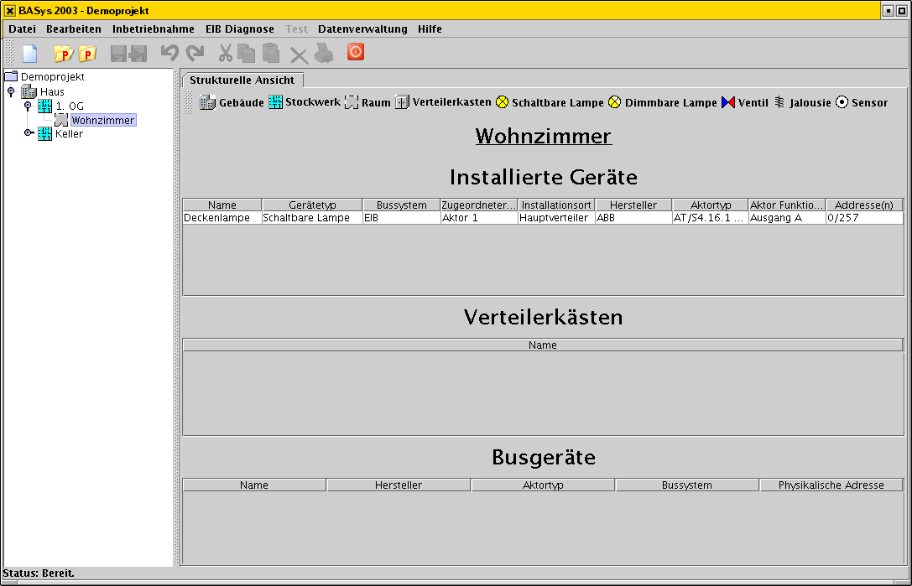

| überblick. |
BASys 2003 ist ein in Java implementiertes Softwaresystem zur Planung und Inbetriebnahme von Gebäudeautomationen. Das System entstand im Rahmen der Diplomarbeit von Oliver Alt an der TU Wien (Österreich). Es ermöglicht die Planung einer Gebäudeautomation, die Inbetriebnahme der Automation und bietet Funktionen im laufenden Betrieb den Gebäudezustand zu überwachen und zu beeinflussen.
| anforderungen. |
Das System entstand unter folgenden Anforderungen:
| eigenschaften. |
Die aktuelle Version des Systems besitzt folgende Eigenschaften:
| zukünftige erweiterungen. |
Für zukünftige Versionen des Systems sind folgende Erweiterungen geplant:
Wenn Sie weitere Ideen für die Weiterentwicklung haben, schreiben Sie uns unter ideen@basys2003.org
| screenshots. |
Strukturelle Planungsansicht:
Programmierdialog für EIB Geräte:
Dialog zur Datenadministration:
| verwendete werkzeuge und technologien. |
Folgende Werkzeuge und Technologien wurden zur Implementation von BASys 2003 eingesetzt:
| http://www.javasoft.com Java 1.4 | |
| http://www.eclipse.org Software Entwicklungsumgebung |
| http://www.junit.org Java Test Framework |
| Umbrello UML Editor f�r KDE 3 | |
| Log4j Leistungsvolle Konsolenausgabe |